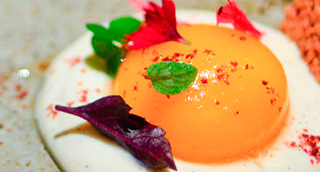

Yema de gallina con velo de mango. Aromas de moscada y canela
"Para empezar un trampantojo, "El Rovell de l'ou". El uso de la técnica de envolver líquidos."

| Crema de Gallina | |
|---|---|
| Pechuga de Gallina | 1 un. |
| Apio | 2 rm. |
| Puerros | 1 un. |
| Perejil | 2 rm. |
| Agua Mineral | 1'5 l. |
| Leche de Coco | 250 ml. |
| Yema de huevo | 1 un. |
| Nata líquida | 40 ml. |
| Sal | 1 cc. |
| Moscada + Canela | 1 cc. |
| Yema de Mango | |
| Puré de Mango | 100 ml. |
| Agua mineral | 100 ml. |
| Jarabe TPT | 100 ml. |
| Gelatina Vegetal | 15 gr. |
| Sal Maldon | 1 cc. |
-
Crema de Gallina
- En una marmita colocamos la pechuga de gallina con el agua mineral y llevamos a ebullición semicubriendo con la tapa.
- Hervir 60' y añadir las ramas de apio y de perejil. Hervir otros 60' más.
- Colar el caldo desechar las verduras y retirar la pechuga. Enfriarla y deshuesarla.
- Dejar reducir el caldo hasta obtener solo 1/2 l. Rectificar de sal.
- Colocar en thermomix el caldo reducido y la pechuga. Triturar a velocidad 10 4'.
- Añadir la leche de coco, la nuez moscada y la canela, triturar a velocidad 5 2'.
- Con la ayuda de unas varillas diluir la yema con la nata. Mezclar con la crema de gallina verificando que su temperatura es < 50º.
- Rectificar de sal y pasar otra vez por un colador fino. Colocar en una jarra.
- Llenar los moldes semiesféricos de 3 cm. de ø y congelar. Yema de Mango
- Mezclar mango, agua mineral, jarabe TPT y gelatina. Llevar a ebullición.
- Desmoldar las semiesferas de crema de ave. Pincharlas con una aguja y sumergirlas 2 seg. en la gelatina aún caliente y líquida a una temperatura entre 40º y 50º.
- Disponer en cucharas chinas y dejar descongelar.
- Al servir colocar unas escamas de sal Maldon por encima.